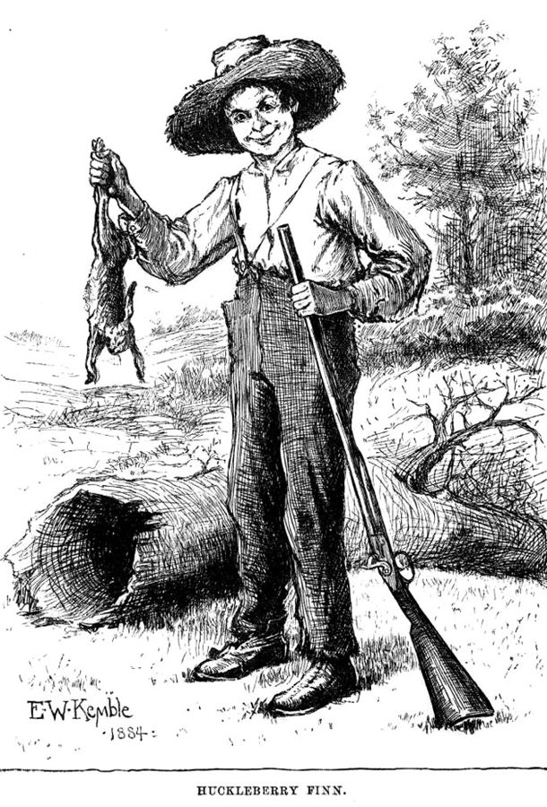

读之前
这一页是回忆录第三部分 Mind over Matter 的四章，大约从 1953 年前后写到 1960 年。第 11 章讲作者怎样找这个故事的主角；第 12 章讲他回布鲁克林、去中学教书的几年；第 13 章讲第一稿怎样写出来，还原样录了一段最早的开头；第 14 章讲稿子交出去以后。读的时候抓两条线：查理这个人物和他的声音是从哪里来的；一个写法上的难题，作者是怎样一步步解开的。
1953 年前后，二十五六岁。低俗杂志社裁员后，他转到 Stan Lee 手下编漫画，也自己写脚本；用笔名发过西部小说，1952 年用本名发表了科幻小说 Robot Unwanted，他说这是他第一篇署本名的作品。1952 年秋向 Aurea 求婚，在市政厅结了婚，住曼哈顿月租 17.25 美元的冷水公寓。和人合伙的时装摄影公司赔光了积蓄，精神分析也停了。笔记夹里有两张讲提高人的智力的便条：Guinea Pig 和 Brainstorm。
读的时候带着这几个问题。不用先找答案，读完回来对照「检查一下理解」。
作者写了二十来个开头，都不满意。留意他说缺的是哪一样，后来又是在哪里找到的。§1 §3
一个学生说的话、作者自己的记忆、别的作家的写法，各自给了查理什么？读的时候记下来，读完对照「对照小说」。§2 §6
原样照录的那段最早的开头，是从谁的眼睛看出去的？想想照这样写下去，读者会怎样看查理。§5 §6
稿子交出去以后，好几个人有各自的意见。留意每个人站在哪一边，作者凭什么拿主意。§8 §9
分节地图
这一页四章，原书在章内用空行分成 9 节。读完一节打个勾；每节下面的英文是那一节开头的几个词，在 Kindle 里搜它就能跳过去（§6 开头是一段引的草稿，搜的是草稿后面作者自己的第一句）。没读的那几行先模糊着，免得提前看到内容，点一下就能看清。全页约 6100 词，分两次读。
第一次坐下§1–§4 · 约 2200 词 · 第 11、12 章：找主角的几个月，和回布鲁克林教书的几年
第 11 章 Looking for Charlie约 700 词 DURING THE NEXT FEW MONTHS, the … 二十来个开头。留意作者为什么一个主角也留不住，他说毛病出在哪。 第 12 章 Charlie Finds Me约 1200 词 IT HAPPENED IN BROOKLYN. Aurea and … 回布鲁克林，去中学教书。留意下课后留下来的那个学生说的话，和作者怎么答。 第 12 章（续）约 300 词 It’s amazing how quickly depression, frustration, … 翻旧笔记。留意两页笔记摆在一起时碰出了什么，名字又从哪里来。 第 12 章（续）约 40 词 Charlie Gordon—whoever you are, wherever you … 只有两段。留意作者在对谁说话。 第二次坐下§5–§9 · 约 3900 词 · 第 13、14 章：第一稿怎样写成，稿子交出去以后
第 13 章 Getting There约 200 词 I TYPED THE FOLLOWING opening pages … 最早的开头，原样照录。留意它是从谁的眼睛看出去的。 第 13 章（续）约 2100 词 I remember typing that opening fragment. … 最长的一节。留意作者第二天为什么写不下去，他从别人的书里借了什么。 第 13 章（续）约 200 词 After that, the story wrote itself, … 写完以后。留意第一个读者的话，和这一节的最后一句。 第 14 章 Rejection and Acceptance约 500 词 A FEW DAYS LATER, Harry Altshuler … 把稿子送到编辑家里。留意编辑读完说的第一句话，和电话里经纪人的态度。 第 14 章（续）约 900 词 When I told Phil Klass what … 几位朋友和编辑的意见。留意作者每一次怎样拿主意，和最后两段。
背景：书里默认你知道的事
按在书里出现的顺序排，标题前是节号。作者和这些人之间的事，都是作者自己的说法。
§2 两家科幻杂志1950 年代美国的科幻短篇主要登在杂志上，按字数付稿费。这一页提到两家：《银河科幻》（Galaxy Science Fiction，1950 年创刊，H. L. Gold 主编），和《奇幻与科幻杂志》（The Magazine of Fantasy and Science Fiction，常简称 F&SF，1949 年创刊）。作者 §2 里说的 The Trouble With Elmo 登在 1958 年 8 月号的 Galaxy 上。§9 里说哪家「最成功」、哪家「最受敬重」，是作者的看法。
H. L. Gold（1914–1996） 科幻编辑，名 Horace Galaxy 从创刊起的主编，做到 1961 年。m4 里每周五在家开牌局、作者听说他很少出门的那位编辑就是他。
§2 Sea GateSea Gate（书里写作 Seagate）在布鲁克林 Coney Island 半岛的最西头，三面临水。19 世纪末这里是海滨度假地，1899 年业主们成立 Sea Gate 协会，入口设门，常被称作纽约市第一个封闭式社区（gated community），外人进出要过门卫。往东就是 Coney Island 的海滩和游乐场。作者在 m1、m2 里讲过的童年在布鲁克林内陆的 Brownsville 一带，这里是海边。
从空中看 Sea Gate，美国陆军工程兵团 1992 年 12 月拍摄。三面都是水，房子一直盖到海边。U.S. Army Corps of Engineers，公有领域，维基共享资源
§2 「特殊班」和当时的叫法作者教的 Special Modified English 是给智商分数低的学生开的英文课。「特殊」「改编」都是学校的委婉说法，学生自己叫它 dummy class（笨蛋班）。当时美国很多中学按智商和成绩测验把学生分到不同的班、不同的「轨道」（tracking），这种分班后来争议很大。retarded（智力迟钝）是那时的正式说法；作者 2004 年写书时用 developmentally challenged，今天通行的说法是 intellectual disability（智力障碍）。
§3 亚里士多德论悲剧亚里士多德（前 384–前 322）的《诗学》（Poetics）是西方最早系统讨论悲剧的书。他说，最好的悲剧主人公是「声名显赫、境遇顺遂」的人，比如俄狄浦斯，因为某个过失从顺境跌进逆境，让观众生出怜悯和恐惧。作者转述成「悲剧只能发生在出身高贵的人身上，只有从高处才谈得上跌落」，比原文说得绝对：亚里士多德讲的是怎样写最好，没说别的人写不成悲剧。作者在这一节把「高处」和 m3 的书山连在了一起。
§6 donnée 和「包法利夫人就是我」Henry James（1843–1916），生于美国、晚年入英国籍的小说家、批评家。donnée 是法语「给定的东西」。他在 1884 年的文章《小说的艺术》（The Art of Fiction）里说，批评家要先承认作家的题材、想法，也就是他的 donnée，只评他拿它做成了什么。「包法利夫人就是我」常被归到 Flaubert（1821–1880）名下，可他大量的书信里找不到这句，最早见于 1909 年一位批评家的书，是辗转听来的。作者引的时候没提这一层。
§6 哈克贝利·费恩的开头Mark Twain 的《哈克贝利·费恩历险记》（Adventures of Huckleberry Finn）1884 年底在英国、1885 年初在美国出版，通篇是少年哈克的口吻和土话。正文之前有两小段作者署名的话：一则「告示」，一本正经地警告读者不许在书里找动机、寓意和情节，违者起诉、放逐、枪毙（prosecuted、banished、shot）；一则「说明」，列出书里用了哪几种方言。作者在 §6 里讲的就是这两段。

E. W. Kemble 给初版画的插图，画上署着 1884。书里的哈克就是这样一个没念过几天书的流浪少年。E. W. Kemble，公有领域，维基共享资源 §7 作者身边的科幻圈m4 里作者常去的 Hydra Club，是纽约一群科幻作家、编辑、经纪人的聚会圈子。§9 的 Milford 研讨会 1956 年由 Damon Knight、Judith Merril、James Blish 发起，在宾夕法尼亚州小镇 Milford 举行：来的都是发表过作品的作家，轮流读彼此的新稿、当面批评，没有老师和学生之分。作者点名的 Judy Merrill（书里多拼了一个 l）、Damon Knight、Kate Wilhelm、Jim Blish 都是当时的科幻作家。
Phil Klass（1920–2010） 科幻作家，笔名 William Tenn m2 里作者在商船学校结识的 Morton Klass 的哥哥，m4 里作者租下的那间冷水公寓原来是他的。以幽默、讽刺的短篇出名，后来在宾州州立大学教书。
Robert P. Mills（1920–1986） 编辑，作者叫他 Bob 从 1958 年 9 月号起接替 Anthony Boucher，当《奇幻与科幻杂志》主编，做到 1962 年，后来成了文学经纪人。
词与短语
两类：黄边的「每个字都认识」是熟词生义、习语、行话和话里的弦外之音；其余是这里用法特别的词。斜体小字是原句里的几个词，在 Kindle 里搜它就能找到原文。
§1 第 11 章
false starts
… It was a period of false starts, …
开了头又作废的尝试
false start 本是赛跑的抢跑，枪响前就冲出去，得回到起跑线重来。
give someone a tumble
… who won’t give him a tumble, …
（对某人）有点意思，理睬
老派的美国俚语，多用在否定句里：那个姑娘正眼都不瞧他。这是作者早年笔记里的口气。
at the drop of a syllable
… fights at the drop of a syllable …
一言不合就打
从 at the drop of a hat（帽子一落地就开打，一点就着）改出来的：一个音节都能惹他动手。
cast an actor
… to cast an actor to play …
挑演员（演某个角色）
cast 在戏剧里是「选角」，名词 cast 是全体演员。作者的比方：剧本有了，却不知道主角是个什么样的人，就去找演员。
in the middle of the action
… “in the middle of the action,” as …
从情节当中开始
拉丁语 in medias res 的意思。古罗马诗人贺拉斯用它称赞荷马：史诗不从头讲，直接落在事情半中间。
blue-pencil
… I’d have blue-penciled this with a note …
（编辑）删改
编辑改稿惯用蓝铅笔，所以 blue pencil 当动词就是删、改。m3 里那位老编辑也是举着蓝铅笔打招呼。
operate blindfolded
… going to operate blindfolded!
蒙着眼睛做手术
作者挑自己旧稿的毛病：医生戴着口罩，眼睛露在外面；写成眼睛「从口罩后面」笑，口罩就遮住了眼睛。
find its way into
… that passage later found its way into …
（不知不觉地）进了，用进了
主语是东西，像它自己找到了路：那段旧稿的一部分后来用进了中篇。
turn it around
… my life and turned it around.
（把生活）彻底扭转
turn around 是掉头、转向。这一章的最后一句，「他」是谁，下一章揭晓。
§2 第 12 章
broke
… I’d grown up. We were broke.
身无分文
口语，be broke 是没钱了，不是「坏了」。go broke 是破产。
fashion styling
Aurea did freelance fashion styling and …
时装造型
拍时装照时给模特搭衣服、摆姿势、定光。m3 里作者第一次见 Aurea，她就在摄影棚里做这个。freelance 是自由职业，按活计酬。
buy one’s freedom from
… as a way to buy my freedom …
（花代价）把自己赎出来
原是奴隶、契约工花钱赎身。他读夜校、考教师执照，为的是不再靠写漫画脚本过日子。
substitute teacher
… Board of Education exam for substitute teacher, …
代课教师
顶替请假老师的临时教师。下文 regular teacher 是正式教师，要另考执照，工资也高。
Trojan horse
… “worm” or “Trojan horse” containing a program …
特洛伊木马（病毒）
worm（蠕虫）和 Trojan horse 都是后来的计算机病毒名。作者说的是 2004 年的叫法，1956 年还没有这些词。
gated community
… a gated community at the western …
封闭式社区
四周有围墙、路口有门卫的住宅区，见「背景」。
have something handed to one
… deserved to have success handed to them …
（不劳而获地）被人送到手上
常说 have it handed to you on a plate（端着盘子送上来）。作者说这些聪明学生觉得凭聪明就该得到成功。
want to be writers
… and others who want to be writers.
想当作家（而不是想写作）
前半句是 who want to write：爱写的人和想要「作家」头衔的人是两种人。作者拿这句话训斥嫌作业多、不肯改稿的学生。
issues of the day
… focused on issues of the day …
时事，眼下的热门话题
of the day 是「当时的、当下的」，不是「这一天的」。
lumber
… that boy, who lumbers toward …
笨重地走
名词 lumber 是木料（m1 里 Faulkner 的 lumber room 是堆杂物的屋子），动词是迈着沉重的步子走。这个学生是打橄榄球的大个子。
letter
… with the orange letter J.
（校队的）字母标志
美国中学校队队员能在外套上缝学校名的首字母，叫 varsity letter，是一种荣誉。作者一看就问他是不是橄榄球队的。
linebacker
“Yeah. Linebacker. Look, Mr. Keyes, …
（美式橄榄球的）线卫
防守队员，站在前排后面，负责拦截和擒抱，多是身强体壮的人。
dummy class
… this is a dummy class, ain’t it?
笨蛋班
dummy 是假人、哑巴，口语里骂人笨。ain’t it 是不规范的口语（isn’t it）。学生自己把学校的委婉说法捅破了。
taken aback
I’m taken aback. “What?”
吃了一惊，愣住
原是航海用语：风突然打在帆的正面，船被逼得往后退。这一段作者改用现在时讲，像那一幕就在眼前。
intrude
… but the boy keeps intruding.
（不请自来地）闯进（脑子里）
他想写别的故事，那个学生的话总往里挤。
go nowhere
It was going nowhere. I put …
没有进展，白费工夫
不是「哪儿也不去」。前面连说三遍 and so on，就是一页页笔记原地打转。
leave of absence
… take a leave of absence from teaching, …
（较长的）停薪留职，长假
公职人员保留职位、暂时离岗，一般不发工资。
Cushman scooter
… back of my red Cushman scooter.
Cushman 牌踏板摩托
Cushman 是美国的老牌子，做小型踏板摩托车。他让 Aurea 坐在后座，送她去火车站。
sick to my stomach
… I was sick to my stomach.
恶心得想吐
字面是胃里难受；这里是读自己的稿子读到反胃，下一句说它太烂了。
§3 第 12 章（续）
dictum
Recalling Aristotle’s dictum in his Poetics,
（权威的）论断，名言
拉丁语「说过的话」，多指名家定下的规矩。见「背景」。
highborn
… only to the highborn, because …
出身高贵的人
老派的书面词。和后面 the lowest of the low 一高一低对着说。
the lowest of the low
… as the lowest of the low,
最底层的人，最卑微的人
「低中之低」。作者说的是世人眼里的位置，不是他自己的看法。
choke up
I felt myself choking up as …
哽咽，喉咙发紧
不是被噎住。情绪一上来说不出话、快要掉泪。
§4 第 12 章（续）
ready or not
Here I come, ready or not.
不管你准备好没有（我来了）
捉迷藏时捉人的那个数完数喊的话：Ready or not, here I come! 作者拿它对查理喊。
§5 第 13 章
in one sitting
… opening pages in one sitting, pounding …
一口气（写完），没有起身
sitting 是「坐一次」。本站分节地图里的「坐下」就是这个意思。
§6 第 13 章（续）
donnée
Henry James wrote of the donnée—
（作家得到的）题材，给定的东西
法语。作者说那个学生把 donnée 给了他，他拿自己的记忆回赠。见「背景」。
spark
… what I needed to spark the story, …
点燃，引发
spark 是火星，作动词是「打出火花、引着」。
it hit me
Then, suddenly, it hit me.
我一下子明白了
it 是那个念头，像被什么撞了一下。
angle of vision
… prefer to call the angle of vision, …
视角
文学课上一般叫 point of view（叙述视角）。作者更爱用自己的叫法，下一句的 first person, major character 是「第一人称、由主人公自己讲」。
progress report
… an ongoing record, a progress report.
进展报告
工作、研究中定期交的进度汇报，是一种公文。小说里查理把它拼成 progris riport。
vernacular
Before plunging into the vernacular of …
方言土语，口头的说法
和书面的标准语相对。哈克说的是密西西比河一带没念过书的孩子的话，见「背景」。
to wit
… dialects are used, to wit:
即，就是
古旧的公文用语，后面跟着列举。Twain 故意用法律文书的腔调。
“Where? Where?”
Aurea jumped up, startled. “Where? Where?”
「在哪儿？在哪儿？」
作者半夜喊 The mouse!，Aurea 被惊醒，以为屋里真有老鼠。
sidekick
… a furry little sidekick for Charlie.
跟班，搭档
西部片、侦探故事里跟着主角的伙伴，比如堂吉诃德身边的桑丘。furry 是毛茸茸的。
§7 第 13 章（续）
novelette
… a long novelette or a short novella.
中短篇；中篇
英语按长度分：short story、novelette、novella、novel。雨果奖今天的划法是 7500 词以上算 novelette，17500 词以上算 novella。
first crack at
… of course, have first crack at it.
先试的机会，优先权
crack 在口语里是「一次尝试」（have a crack at）。Gold 约过稿，按规矩先给他看。
land
And I had landed a respected agent …
争取到，弄到手
本义是把鱼拉上岸。land a job、land a contract 都是这个用法。
… is a mild word
Euphoria is a mild word to describe …
说……都还嫌轻
euphoria 是狂喜。说「狂喜」还不够形容，就是高兴到了极点。
§8 第 14 章
bluff
… I’m not very good at bluffing.
（打牌时）虚张声势
扑克里手上牌不好却加注，吓对手弃牌。他在 Gold 家的牌桌上学过牌（m4），这是自嘲。
handle that end
I’ll handle that end.
那一头归我管
end 是一桩事里的「一部分、一方面」。经纪人的意思是：谈价钱是我的事，你别开口。
on edge
… I arrived I was on edge.
紧张不安
像站在边上，一碰就倒。
hands-on
… a hands-on editor who didn’t hesitate …
亲自动手的
不是「手把手教」。说编辑 hands-on，是他爱亲自改稿、提修改意见。
happily ever after
… and they live happily ever after.
从此过着幸福的日子
童话故事的收尾套语。
sense of the market
… with a strong sense of the market.
市场嗅觉
sense 在这里是「感觉、判断力」，知道读者要什么、什么好卖。
pit … against
… who was I to pit my judgment …
拿……去和……较量
pit 原是斗鸡、斗狗的坑。who was I to … 是「我算老几，敢……」。
§9 第 14 章（续）
torn
I was torn. Whereas
左右为难
被两边拉扯着、撕开了。后面一句说两家杂志各有各的好。
the good news along with the bad
… the good news along with the bad.
好消息和坏消息一起来
英语里常说 I have good news and bad news，先听哪个？这句话后面就是一好一坏。
two cents a word
… buy it at two cents a word.
每词两美分
杂志按词数付稿费。m4 里低俗杂志的一般作者是一词一分钱，del Rey 拿两分。
that-ery and which-ery
I got rid of that-ery and which-ery,
满篇的 that、which 从句
作者造的词，-ery 有「一大堆、一套做法」的意思。下面他用一个例句示范怎么把十五个词删成四个。
pedestrian
… changed pedestrian style into a lean, …
平淡乏味的
本义是步行的、行人。说文字 pedestrian，是一步一步慢吞吞，没有一点力气。和后面 lean, muscular（精瘦、有肌肉）对着说。
getaway
… one of the getaway workshops in Milford,
（离开城市的）度假式的
getaway 本是逃跑（getaway car 是逃跑用的车），也指短期出游、躲清静的地方。
old-guard
… at which the old-guard Hydra Club writers …
老一辈的，元老派的
原指拿破仑的老近卫军，引申为一个圈子里资格最老的那批人。
lead story
… was published as the lead story of …
（杂志的）头条作品
一期里排在最前面、通常上封面的那一篇。
out of the corner of my mind
Out of the corner of my mind,
在心里的余光里
从 out of the corner of my eye（用眼角余光瞥见）改出来的：不是眼睛看见，是心里瞥见。
对照小说
作者在这四章里讲了查理和他的报告是怎样来的。一张卡片一件事：回忆录里怎么说，小说里落在哪一页；点链接回到那一页。右上角是回忆录这一页的节号。
「我想变聪明」 作者记得，特殊班开课第一天，一个打线卫的学生下课后留下来，问自己要是用功变聪明了，能不能回普通班。他最后那句话，原样成了查理第一篇报告里的一句。作者说这个学生给了他缺的那样东西：动机。小说 3 月 6 日那篇，Strauss 夸查理的也正是 motor-vation。
报告 1 · 3 月 3 日 §2 打进来的楔子 作者翻出旧笔记，又想起大学一年级在地铁上的念头：读书在他和家人之间打进了楔子（m1）。查理被面包店的同事联名赶走那天，用的是同一个比方，说变聪明把他和认识的、爱过的人隔开了。这句中篇里就有，长篇去掉一个 once，后面又添了半句。
报告 11 · 5 月 20 日 §3 两位博士的争论 最早的开头用旁观的第三人称，Strauss 和 Nemur 当着查理的面争要不要用他，话都写全了。长篇里还是这场争论，换成查理坐在一边记：听不懂的词只写半截，后面打星号（intelek**、host**）。智商从 70 改成 68，跳起来握手、说要拼命努力，两稿都有。
报告 5 · 3 月 6 日 §5 墨迹和照片 最早的开头里，查理跑去储物柜拿眼镜，最后说墨迹像一支漏墨的钢笔弄脏了桌布；中篇还是钢笔，长篇改成一瓶墨水洒在白卡片上。做看图编故事的测验时，查理想讲小侄子 Miltie，长篇换成了钱包里和 Norma、Herman 叔叔的合照（3 月 6 日）。
报告 2 · 3 月 4 日 §6 替实验报信的老鼠 作者说写到查理和白老鼠赛跑之后，他半夜喊出声来，给自己记下：老鼠受同样的处理，要替实验预告后面的事。名字是手指自己打出来的：m1 里读到的 Swinburne，m4 差点给了机器人。小说里 Algernon 先变得反常、咬了 Fay，查理才决定把它送回实验室。
报告 14 · 7 月 9 日 §6 停在哪一行 作者说第一个完整稿的结尾，是 Alice 读完报告、含着泪请 Nemur 跟她一起去找查理；开头也是她接过这叠报告。两头都删了，中篇停在 P.P.S. 那一行：请人去后院给 Algernon 的坟放花。长篇也停在这一句，只是写成第二个 P.S.。
报告 17 · 11 月 21 日 §9
第一稿和登出来的中篇
第一个完整稿（作者说约 3 万词）
1959 年登出的中篇（约 1.2 万词）
开头：Alice 来实验室问查理，
Nemur 把一叠报告交给她
查理的进步报告
从 progris riport 1 写起
结尾：Alice 读完，含着泪
请 Nemur 一起去找查理
开头两页：Milford 前一晚删掉
同样的报告，删了约一万词
从第一篇报告到 P.P.S.
结尾一页半：删稿时一道斜线划掉
登出来的中篇，从查理的第一句话开始，到他的最后一句话结束。
本站示意图，按作者在第 13、14 章的说法画。作者说第一稿约 3 万词，为了每篇 1.5 万词的上限删了一万词，这几个数凑不上；登出来的中篇本站数下来约 1.2 万词。 值得停下来的句子
It never occurred to me that a developmentally challenged person … would be aware of his or her limitations and might want to be more intelligent.— §2，第 12 章，那个学生下课后来问过他以后。本站译：我从没想到过，一个发育障碍的人……会知道自己的局限，也会想变得更聪明。
省略号那里，作者插了一句「那时候叫 retarded」。这句话说的是他自己当年的想法，和那个学生一对照，没想到的是老师，学生自己早就清楚这是什么班。可以留意小说怎样用这件事：查理一开头就想变聪明，这一点来自那个学生；那个学生知道别人怎么看他，查理在开头几篇里却不知道，大家一笑，他不知道为什么，也跟着笑。愿望给了查理，看清自己的那一步，作者留到了后面。
I decided I had to trust the reader.— §9，第 14 章，Milford 研讨会的前一晚。本站译：我决定，我得信任读者。
这句话前面，作者承认那段 Alice 接过手稿的开头是怕出来的：怕读者一翻开就撞上满纸错字，被吓跑。§6 里他特意从 Twain 那里借来这层「先打招呼」的办法，到这里自己拆了。有意思的是 Twain 的告示本身是个玩笑，作者借去的却是一层认真的保护。删掉以后，读者第一眼看到的就是查理自己的拼法，没有人替他解释。
读完想一想
1. 作者说，那个学生给了他故事的种子，他拿自己的记忆回赠（§6）。可这一页没说那个学生后来怎样，学期末有没有回到普通班。你怎么看作者把一个学生最难开口的一句话写进小说？
本站的看法 本站的看法：两面都有。作者没有写这个学生的名字，书里也只留下他的一句话和一件外套，没有把他写成笑料；那句话后来被很多读者读到，说出了很多人说不出口的愿望。可学生本人没有被问过，作者当时答应得也含糊，承认自己不知道有没有这个权力。雨果奖那晚他觉得那个学生站在身边，这是作者的感激，不等于那个学生得到了什么。
2. Gold 要改结局，作者不肯（§8）；为了发表，他却自己划掉了 Alice 读完报告、去找查理的那一页半（§9）。后面这一刀算不算也改了结局？
本站的看法 本站的看法：查理的命运没变，变的是谁说最后一句话。Gold 要改的是发生了什么：查理不退化、娶了 Alice。删掉的那一页半没有改变查理的下场，可原来故事外面还有一个人读完了、要去找他，留着一点有人接住他的希望；删掉以后，读者手上只剩查理托人放花的那句话，像是托给了读者。作者自己只说他犹豫了一下，没讲他这样想过。
3. 作者说他第二天发现自己在笑查理，才决定整个改成查理自己写的报告（§6）。你读小说开头几篇时笑过吗？笑的是什么，后来那笑变了没有？
本站的看法 本站的看法：第一人称没有让人完全笑不出来，拼法本身就有让人会心一笑的地方，作者也说可以和他一起笑。区别在于：旁观的叙述里，读者站在 Nemur、测验员那一边看他出丑；报告里，读者在查理的脑子里，看见他没看见的东西，比如同事拿他开的玩笑。那时候笑就变成了别扭，这大概就是作者想要的「和他一起笑，而不是笑他」。
对照今天
成立 后来的事实印证了这个说法部分成立 一部分对，一部分被后来的事改了被改写 后来的事实推翻了它，或者完全变了样书里的说法：智力障碍的人不会知道自己的局限，也不会想变聪明（作者说他当年从没想到过相反的情况，§2）
书里 作者说，那个学生来问他之前，他从没想到过一个智力有障碍的人会意识到自己的局限、想变得更聪明。学生自己却清楚地知道这是「笨蛋班」。
当时 当时谈智力障碍，谈的多是怎样安置、照顾、分班，很少听他们自己怎么说。由智力障碍者自己组织、替自己说话的团体，在美国要到 1970 年代才出现。
今天 1974 年初，几位住过俄勒冈州立机构 Fairview 的人在 Salem 聚会，筹办一次由他们自己主持的大会。据说一位与会者说，他想先被当作一个人，组织就叫了 People First。同年的第一次大会来了五百多人，一般认为这是美国「自我倡导」运动的开端。研究也发现他们清楚别人怎么看自己：Ali 等人 2012 年的系统综述归纳了几十项研究，发现智力障碍者和他们的家人都会感受到污名，可能损害心理健康；他们对污名的察觉，和他们怎样看待「智力障碍」这个标签有关。综述也说这方面的研究多是小规模的定性研究。核对于 2026-10。依据：俄勒冈公共广播（OPB）关于 People First 的报道，明尼苏达州发展障碍委员会的自我倡导史料；Ali、Hassiotis、Strydom、King 2012 年《发展障碍研究》（Research in Developmental Disabilities）的系统综述。
检查一下理解
先在心里答，再点开。答错的那题，回书里把对应那一节再读一遍。
1.（§1）作者早期笔记里的主角是些什么人？他说毛病出在哪？ 有暗恋资料室一位姑娘的单身汉 Walton、一干坏事就被抓的惯犯 Steve Dekker、粗鲁又爱哭的管子工帮手 Flint Gargan 等，二十来个开头。他说是先有了「如果……会怎样」的点子，再去找演员，却不知道角色是什么样的人；于是改从事件出发，让人物从故事里长出来。
2.（§2）那个学生问了作者什么？作者怎么回答？ 他先问这是不是笨蛋班，又问：要是他用功、学期末变聪明了，能不能把他转到普通班，他想变聪明。作者说当然，其实不知道自己有没有这个权力，只说看看会怎样。
3.（§3）Charlie 和 Gordon 这两个名字从哪里来？ Gordon 来自 Aurea 在城里工作过的 Larry Gordon 摄影工作室；Charlie 是 Aurea 结婚前最后一个男朋友的名字，也就是作者当年的情敌。
4.（§6）第一稿开了头，作者第二天为什么写不下去？后来怎么解决的？ 重读时他发现自己在笑查理，照那样讲，读者也会笑他，就像当年打碎盘子时顾客笑他、老板骂他 moron。他决定只从查理的眼睛看，用第一人称；卡了几天，一天早上醒来想到：让查理按实验要求写「进步报告」。
5.（§6、§9）作者从 Twain 那里借了什么？后来怎样了？ Twain 在哈克的土话开始之前，先用作者署名的「告示」和「说明」给读者打招呼。作者照着在前面加了一段 Alice 来实验室、Nemur 把手稿交给她的开头。Milford 研讨会前一晚，结尾已经删了，他觉得这个开头多余，删掉前两页，让故事从查理的话开始。
6.（§8、§9）Gold 和 Mills 各提了什么条件？ Gold 说结局太压抑，要改成查理不退化、一直是天才、娶了 Alice、从此幸福。Mills 喜欢这篇，但出版人限定每篇最多 1.5 万词，作者要是肯删一万词，他就按每词两分钱买下。
用一句话说这一页：
精彩回顾
隔几周回来，先看这几张卡片。想不起来的那张，点节号回到这一页，再回书里那一节。
一句话： 作者在中学的特殊班里遇见了查理：一个学生想变聪明的愿望，加上他多年的念头和自己的记忆，写成了查理的报告；稿子交出去以后，他守住了结局，拆掉了框子。
穿橙色字母外套的学生 特殊班第一天，打线卫的大个子等同学走光了才挪到讲台前：这是笨蛋班吧？我要是用功变聪明了，能回普通班吗？我想变聪明。
§2 两页笔记撞在一起 Gold 来电约稿，作者翻出大学一年级那句「如果能人为提高智力会怎样」，又翻到那个学生的话，两页并排一放，故事有了主角的动机。
§3 在哪儿？在哪儿？ 半夜作者喊出「老鼠！老鼠！」，Aurea 惊醒，以为屋里有老鼠。他解释完，接着打字，老鼠的名字自己出现在纸上：Algernon。
§6 一根棒球棍 作者记得 Phil Klass 听完摇头：编辑和经纪人都错了，你要是敢改结局，我拿棒球棍打断你两条腿。
§9 一道斜线 为了删够字数，作者在 Alice 读完报告的那一页半上划了一道长长的斜线，让故事停在给 Algernon 的坟放花那一句。
§9 第二个影子 雨果奖颁奖那晚，作者觉得聚光灯下还有一个影子，另一只手也伸向奖杯：那个说「我想变聪明」的学生。
§9